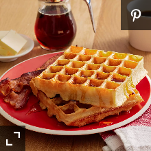

Waffles Recipe

Description
Ingredients
- 2 eggs
- 2 cups all-purpose flour
- 1 and 3 quater cups milk
- Half cup vegetable oil
- 1 tablespoon white sugar
- 4 tablespoons baking powder
- 1 quater teaspoon salt
- Half teaspoon vanilla extract
Steps
- Preheat waffle iron. Beat eggs in large bowl with hand beater until fluffy. Beat in flour, milk, vegetable oil, sugar, baking powder, salt and vanilla, just until smooth.
- Spray preheated waffle iron with non-stick cooking spray. Pour mix onto hot waffle iron. Cook until golden brown. Serve hot.